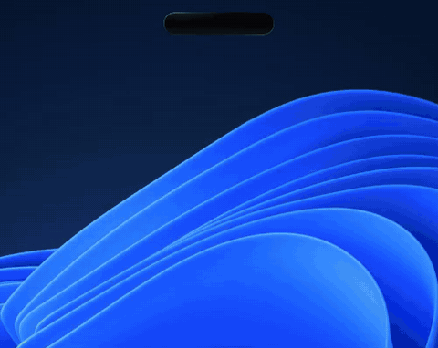

HALO
A Dynamic Island for Windows – your music, browser media, messenger notifications and a timer, right at the top of the screen.

Windows 10 (2004+) or Windows 11 · free
Windows says “Windows protected your PC”?
That’s normal – HALO isn’t code-signed yet. To install it:
- Click More info
- Click Run anyway
ویندوز پیام «Windows protected your PC» نشان میدهد؟
این پیام عادی است؛ چون HALO هنوز امضای دیجیتال ندارد. برای نصب:
- روی More info کلیک کنید
- روی Run anyway کلیک کنید
What HALO reads – and what it doesn’t
- Notifications: only from messenger and social apps (Telegram, WhatsApp, X, Bale, Rubika, Instagram, Discord…). Everything else is ignored right away. HALO asks your permission before reading anything.
- Media: the title and cover of what’s playing in your browser or music app, so it can show it and control it.
- Nothing leaves your PC. Message text is never saved or sent anywhere.
- Why an admin prompt at install? To register the notification helper with Windows (a one-time step).
HALO فقط نوتیف پیامرسانها و شبکههای اجتماعی و اطلاعات مدیای در حال پخش را میخواند؛ چیزی ذخیره یا ارسال نمیشود و قبل از هر کاری از شما اجازه میگیرد.
Check it yourself
Want a second opinion? Scan the installer on VirusTotal – and the whole source is on GitHub.
Using HALO stays completely free!
If you like HALO, you can support its development with a small donation. It is completely optional and nothing is locked behind it. A ⭐ on GitHub or telling a friend helps just as much.
HALO همیشه رایگان میماند
اگر از HALO خوشتان آمد و دوست داشتید، میتوانید با یک حمایت کوچک به ادامهی توسعهاش کمک کنید. حمایت کاملاً اختیاری است و هیچ قابلیتی پشت آن قفل نیست.
ستارهدادن به پروژه در گیتهاب یا معرفی HALO به دوستانتان هم همانقدر کمک میکند. 🙏